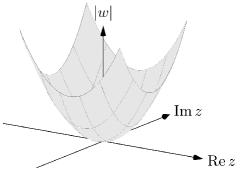

Chapter 49 Affine and projective plane curves
In this chapter, we will define affine and projective plane curves. This has two purposes:
-
•
Many interesting curves in can be defined as the set of roots of a polynomial. This is just a natural generalization.
-
•
We will see that, in fact, every compact Riemann surfaces can be written as a projective curve! Thus, by studying the projective curves, we have in fact studied all compact Riemann surfaces.
We will see what these means in the following sections.
49.1 Affine plane curves
Consider some familiar curves on the plane.
-
•
A line can be represented by an equation , or .
-
•
A circle can be written as the set of for .
There is not much going on so far, but here is a picture.
ΨΨdraw((-2, -4)--(2, 4), red, L=Label("$x=2y$", EndPoint, align=E));
ΨΨdraw(unitcircle, blue, L=Label("$x^2+y^2=1$", Relative(0.13)));
ΨΨgraph.xaxis("$x$");
ΨΨgraph.yaxis("$y$");
Ψ
As you can see, the definitions above are actually quite clumsy. We can do better by defining the points on the curve implicitly:
-
•
A line can be represented as the set of such that .
-
•
A circle can be represented as the set of such that .
Of course, this way it is harder computationally to compute the coordinate of a point, but the definition is nicer.
The point is:
Moral 49.1.1 —
Many of the interesting curves can be written as the set of roots of a polynomial.
So we will try to do the same here — intuitively, if we start with complex dimension and specify one polynomial, then the remaining part has complex dimension i.e. a Riemann surface.
First, there is a technical detail we need to sort out — the set of roots of a polynomial need not be a smooth curve.
Example 49.1.2
The set of roots of in is not a curve near the origin — there are two intersecting curves.
ΨΨΨdraw((-2, -2)--(2, 2), red, L=Label("$x^2-y^2=0$", EndPoint, align=N));
ΨΨΨdraw((-2, 2)--(2, -2), red);
ΨΨΨgraph.xaxis("$x$");
ΨΨΨgraph.yaxis("$y$");
ΨΨ
This can be easily handled by placing a restriction on the polynomial. Let a polynomial, and . Then:
Theorem 49.1.3
For a point such that not both and vanishes, then is smooth near .
If at a point such that or , we say is smooth or nonsingular at .
In fact, we have something more. With notation as above, let , then:
-
•
Suppose , then near the point , can be parametrized by for some analytic function .
-
•
Suppose , then near the point , can be parametrized by for some analytic function .
All these are just the implicit function theorem.
Exercise 49.1.4
Check the statement above on the circle , at the points and .
The exact same statement holds if we replace with .
Next, we want the set of roots to actually be a Riemann surface, not just a set of points in . So, we would need to find a suitable analytic structure on .
In the circle above, what would be a suitable analytic structure? One possible thought is to unroll the circle by arc-length and map it onto , but for a Riemann surface this isn’t even well-defined — how would you unroll, let’s say a sphere onto a plane?
Another possibility is, given the statement of the implicit function above, we declare:
-
•
On an open set where for all points in , suppose is small enough such that can be parametrized by for some analytic function , then the map such that is a complex chart.
-
•
Similar for the case.
A possible complex chart is depicted below. Intuitively, the fact that at the two points and reflects that this “project-to-” complex chart cannot be used at these points.
ΨΨsize(5cm);
ΨΨdraw(unitcircle);
ΨΨfor(real x=-0.95; x<=0.56; x+=0.1){
ΨΨΨreal y=sqrt(1-x^2);
ΨΨΨdraw((x, y)--(x, 0), blue, Arrow);
ΨΨΨdot((x, y), blue);
ΨΨΨdot((x, 0), blue);
ΨΨ}
ΨΨdraw((-0.95, 0)--(0.55, 0), blue);
Ψ
Actually, in the real analytic case, the two definitions above are equivalent. You can optionally do the exercise below.
Exercise 49.1.5
Show this for the circle above. (One possibility is to write down an explicit formula for the arc length and show it is analytic)
While this definition is already somewhat natural, there is something more to this. In category theory, we study properties of objects by studying the maps between them. The set above has a natural map — the inclusion map into , and has an obvious existing analytic structure.
ΨΨsize(8cm);
ΨΨdraw(unitcircle, blue);
ΨΨlabel("$X$", (1, 1)/sqrt(2), blue, align=NE);
ΨΨlabel((1.7, 0), "$\lhook\joinrel\xrightarrow{\quad \iota \quad}$");
ΨΨdraw(shift(2.4)*scale(3.4)*shift(0, -0.5)*unitsquare);
ΨΨlabel("$\mathbb{R}^2$", shift(2.4)*scale(3.4)*shift(0, -0.5)*(1, 1), align=E);
ΨΨdraw(shift(2.4)*scale(3.4)*shift(0.5, 0)*scale(1/3.4)*unitcircle, blue);
Ψ
The analytic structure defined above is natural in the following sense:
-
•
For a function such that , then is analytic if and only if is analytic.
-
•
For a function , then is analytic if and only if is analytic.
-
•
, then is analytic, and for any other complex structure such that is analytic, there exists an unique analytic map .
In fact, each of the bullet point uniquely determines the complex structure on .
In some sense, this is like a universal property for our natural analytic structure.
Of course, we haven’t defined what an analytic real manifold is. Brave readers may try to rigorously formalize all these concepts and prove the statement above.
There is another technical detail that needs to be sorted out. The set of zeros of is:
ΨΨsize(4cm);
ΨΨimport graph;
ΨΨdraw((-3, 1)--(3, 1), blue);
ΨΨdraw((-3, 2)--(3, 2), blue);
ΨΨgraph.xaxis("$x$", -3, 3);
ΨΨgraph.yaxis("$y$", -3, 3);
Ψ
This is certainly smooth — but it’s not connected. We required a Riemann surface to be connected.
Apart from these two issues, our final statement is:
Definition 49.1.6.
Given a polynomial , let be the set of roots of . Suppose that is connected, and for all , is smooth at (that is, either or ). Then, is a Riemann surface — we call an (smooth) affine plane curve, with complex charts defined by:
-
•
On an open set such that everywhere on , then , is a complex chart.
-
•
On an open set such that everywhere on , then , is a complex chart.
We call them affine because the plane is “flat”, unlike the projective plane which is more “curved” in some sense.
Of course, we should have some examples — with these tools, we are in a position to define an (affine) elliptic curve, and other affine curves.
Example 49.1.7 (A parabola)
Consider the Riemann surface cut out by . Its real part looks like a parabola:
ΨΨΨsize(4cm);
ΨΨΨdraw(graph.graph(new real(real x){ return x*x; }, -2, 2));
ΨΨΨlabel((2, 4), "$w=z^2$", align=E);
ΨΨ
Since drawing a graph in dimensions is difficult, we will project the Riemann surface onto dimensions. The result is:
This Riemann surface is in fact isomorphic to the complex plane by .
Example 49.1.8 (The circle)
We all know what the real part of the circle looks like. Visualizing the whole Riemann surface is a bit more difficult, however.
![[Uncaptioned image]](x4.png)
The highlighted red circle is the real part. Note that the fact that the plane is shown to be self-intersecting is merely an artifact of the projection.
Although the circle is not isomorphic to the complex plane (we won’t be able to prove this any time soon111If you have read the homotopy chapter, this Riemann surface has a deformation retract to its real part — the circle, thus is homotopic to it. We know the complex plane is nulhomotopic instead.), it is in fact isomorphic to the hyperbola given by the transformation . With another rotation and multiplication by a constant, it is in turn isomorphic to the hyperbola , which is “almost” isomorphic to the line , missing one point .
Example 49.1.9 (The elliptic curve )
The real part looks like this. (The complex part is not drawn this time.)
ΨΨΨsize(6cm);
ΨΨΨimport graph;
ΨΨΨimport contour;
ΨΨΨdraw(contour(new real(real x, real y){ return x^3-x-y^2; }, (-3,-3), (3, 3), new real[]{0}), red);
ΨΨΨgraph.xaxis("$x$", -3, 3);
ΨΨΨgraph.yaxis("$y$", -3, 3);
ΨΨ
While we won’t be able to prove this any time soon, turns out this Riemann surface is not isomorphic to — even if we allow deleting finitely many points.
49.2 The projective line
We will define the projective line — as it will turn out, it is isomorphic to the Riemann sphere which we have already defined. So this section is only to show how our tools work.
As you might have guessed by the name: as a set of points, is the quotient of the set of points , modulo the relation for any .
As a topological complex manifold, fortunately, it is still easy — has a natural topology, and gets the quotient topology.
Exercise 49.2.1
Define the topology on the space analogously.
Exercise 49.2.2
Let be a line that does not pass through the point . Show that is an embedding i.e. is a homeomorphism.
As a Riemann surface, the usual textbook definition goes:
Definition 49.2.3 (Complex structure of ).
Cover by two open sets, consisting of points with nonzero coordinate, and consisting of points with nonzero -coordinate. Then the two complex charts given by and given by determines a complex structure.
And goes on to prove that the two open sets indeed cover the whole of , the value is well-defined, transition maps are holomorphic, etc.
The definition above is elementary, but uninstructive. Where does the complex charts come from?
Given what we have done in the previous chapter, it should be obvious where we should go from here. There are two things to try:
-
•
Let be an affine plane curve in that does not contain the point . Then the map should be an isomorphism whenever some certain derivative does not vanish.
-
•
We can also use maps: the complex structure is such that whenever we have or , then is analytic if and only if is analytic; and is analytic if and only if is analytic.
Both are equivalent to the definition above — in fact, the definition is merely a special case of the first bullet point, where is taken to be the line and respectively. Coincidentally, the resulting complex charts is the simplest one to write down algebraically, and they already cover the whole , so it is often taken to be the definition. There is no reason why it must be these lines however — you might as well use and .
49.3 Projective plane curves
Instead of using affine plane curves , this time around, we will define projective plane curves .
Apart from “just another source of example”, projective plane curves have a distinctive advantage — they’re compact! This allows many nice properties to hold — we have seen a few in the last chapter.
We start with defining the projective plane . Of course it is quotient by the relation . It has a natural -dimensional complex structure induced from by the quotient map.
The above definition is natural, but abstract. Concretely, we can write:
Question 49.3.1
Define the three complex-manifold charts (on the open set where they’re well-defined) by:
Convince yourself that this complex manifold structure is the correct one.
Then, a projective plane curve is defined to be the set of points such that — again, satisfying certain smoothness and connectedness conditions. Unfortunately, if the polynomial were e.g. , it will not be well-defined, as but . So we require that is homogeneous — that way, is still not well-defined, but at least we know whether .
The complex structure on a projective plane curve is similarly defined by the universal property.
The definition is short and natural, but abstract. A more concrete definition is given below.
Question 49.3.2
With notation as above, define , and to be the domain of , and respectively. Note that gives an isomorphism between and the affine plane .
Convince yourself that the intersection of a projective plane curve with one of the is a (possibly empty) affine plane curve, when mapped to , and all the mappings are isomorphisms.
We need some examples.
Example 49.3.3 (The Riemann sphere, again)
The Riemann sphere can alternatively be defined as the set of points where in .
There’s nothing interesting about this — we already know how the Riemann surface looks like. It just serves as a trivial example.
Example 49.3.4 (An elliptic curve, again)
Let . We know that the set of roots of in the affine plane is the elliptic curve.
Identifying with , most points in can be written as . We want to find a polynomial such that its set of roots in , restricted to , equals to the elliptic curve.
Intuitively, by the identity theorem, this should suffices to uniquely determines the Riemann surface. Indeed, our target polynomial is:
This is just the laziest way to homogenize the polynomial , multiplying the least power of to make the result a homogeneous polynomial, and that .
We have that is compact, and the set of roots of is closed, therefore the resulting Riemann surface is compact! As promised.
As it turns out, unlike the Riemann sphere, the Riemann surface defined by the elliptic curve above has genus 1!1414todo: 14visualize this We have the first example that is definitely distinct from the Riemann sphere.
Exercise 49.3.5
In the example above, what if we multiply a larger power of ? For instance
Example 49.3.6 (A hyperelliptic curve)
Let , where all of are distinct complex numbers.
We can homogenize to get .
As above, the set of roots of in cuts out a Riemann surface — once again, this has genus !
Therefore, we have seen examples of compact Riemann surfaces of all the genera simply by picking different values of .
Saying that we have “seen” the surfaces themselves is not quite accurate — but you can try to visualize these hyperelliptic curves the same way the elliptic curve is visualized.
49.4 Filling in the holes
Prototypical example for this section: The Riemann sphere is formed by filling in a single hole in the complex plane .
49.5 Nodes of a plane curve
Prototypical example for this section: The set defined by the equation has a simple node.